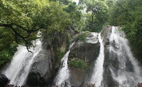
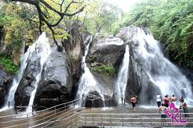
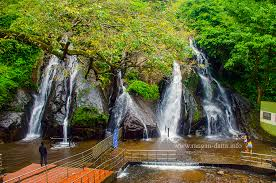

Home
Mainfalls
Old courtallam
Five Falls
Tiger falls
Five falls
- The Kutralam Five Falls (or Coutrallam Five Falls) was one of the cluster of about nine waterfalls that Julie and I understood to be collectively known as the Courtallam Falls.
- Id imagine that this collective was named as such because they were all near the town of Courtallam (pronounced kor-TAH-lum; also known as Kutralam).


